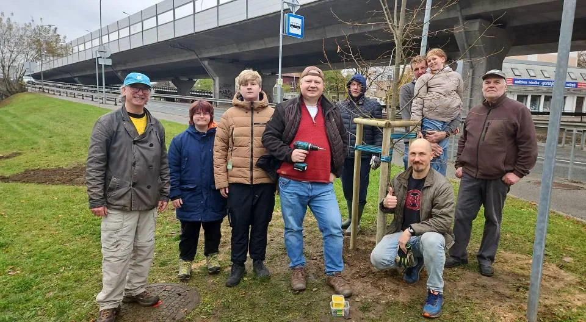

Sākās ar kaimiņiem, kas sanāca kopā
Čiekurkalna attīstības biedrība jeb ČAB ir apkaimes iedzīvotāju biedrība ar sabiedriskā labuma statusu.
Biedrība dibināta 2015. gadā, kad aktīvi kaimiņi nolēma apvienoties, lai sekmīgāk pārstāvētu iedzīvotāju intereses Rīgas domē. Čiekurkalns gadu desmitiem bija atstāts novārtā, tāpēc biedru pulkam ik gadu pievienojas jauni cilvēki.
Šodien biedrībā ir vairāk nekā 60 ģimeņu, un kopā saliktie darbi rāda, ka desmit gados apkaimei esam piesaistījuši aptuveni miljonu eiro.
Šeit var pievienot biedru pieredzes un biežāk uzdotos jautājumus no biedrības mājaslapas.

Biedrības valde
Maija Namavīra
Biedrības valdē kopš 2024. gada
Vija Rulle
Biedrības valdē kopš 2023. gada
Ģirts Skanis
Biedrības valdē kopš 2026. gada
Ilze Kreicšteina
Biedrības valdē kopš 2026. gada
Toms Jansons
Biedrības valdē kopš 2026. gada
Linda Būmeistere
Biedrības valdē no 2023. gada līdz 2026. gada 24. martam
Šeit var pievienot valdes locekļu fotogrāfijas un īsus stāstus no biedrības mājaslapas.
Kā iesaistīties biedrībā
Kļūt par biedru
Aizpildi pieteikuma anketu un pievienojies vairāk nekā 60 ģimenēm, kas kopā lemj un dara. Biedri iesniedz projektus, runā ar Rīgas domi un veido apkaimes nākotni.
PieteiktiesNākt brīvprātīgajos
Talkām, pasākumiem un ūdenstorņa sakopšanai vienmēr noder palīgu rokas. Apkaimē darbojas sešas nevalstiskās organizācijas.
Uzzināt vairākZiedo Čiekurkalnam
Ja nevari līdzēt ar darbiem, vari apkaimes projektus atbalstīt ar ziedojumu. Būsim pateicīgi par ziedojumu jebkādā apmērā, arī konkrētam mērķim, piemēram, ūdenstorņa attīstībai.
Ziedojumu pogas un biedrības konta rekvizītus pievienosim, kad saskaņosim melnrakstu.
Kontakti
Raksti par iestāšanos, brīvprātīgo darbu, ziedojumiem vai idejām apkaimei.
Kontaktus, rekvizītus un pieteikuma anketas saites ieliksim no biedrības mājaslapas, kad saskaņosim melnrakstu.
Sadarbības partneri: Rīgas Apkaimju alianse · Vastint Latvija · Tipogrāfija Zemgus · Mozello · Mājražotāju tirdziņš